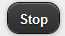
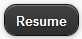
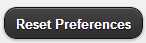

The "Download Managers" tab in My account menu is dedicated to monitor the user's download managers. Several download managers can be installed by a user on different working machines. The user interface allows to install a local download manager through the three buttons displayed in the Download managers tab. Each button is related to an OS specific download manager installer: Windows, Linux and MasOS.
The view is accessible through My account entry on the menu bar.
Information details are displayed for each of the available download managers : status, identifier, name, user ID, IP Address and the last access date.
A registered download manager can have one of the three possible statuses:
ACTIVE: is represented by the
 icon. An
ACTIVE download manager is actually downloading products.
icon. An
ACTIVE download manager is actually downloading products.
INACTIVE: is represented by the
 icon.
An INACTIVE download manager is an available download manager but
does not have ongoing downloading tasks.
icon.
An INACTIVE download manager is an available download manager but
does not have ongoing downloading tasks.
STOPPED: is represented by the
 icon.
A STOPPED download manager is a download manager which has been
stopped and so it is not working.
icon.
A STOPPED download manager is a download manager which has been
stopped and so it is not working.
A registered download manager can be managed once it is selected with the commands:
-
Stop: is represented by the button .
This command makes the download manager stop be assigned to product downloads, purge scheduled/paused Product downloads, but continue ongoing downloading activities until these are finished.
-
Stop Immediately: is represented respectively by the button
 icon.
icon.
This command makes the download manager stop be assigned to product downloads and stop all ongoing and scheduled/paused Product downloads.
To manage a download manager, click on its row in the table, the command buttons are updated according to the download manager status. When a command button is clicked, the status change request is sent to the server and a notification message is displayed.
 Only the ACTIVE and
INACTIVE download managers can be managed. STOPPED
download managers are only displayed.
Only the ACTIVE and
INACTIVE download managers can be managed. STOPPED
download managers are only displayed.

On the left side, the download managers already assigned to data access requests are displayed. On the right side is displayed the list of the users' data access requests.
The request list can be filtered by the download manager they are assigned to. By clicking, on the download manager name, the requests list is updated.

A data access request can have one of the the possible statuses:
Processing: is an going request, it is represented by the
icon.
Paused: is paused request, it is represented by the
icon.
Cancelled: is a cancelled request, it is represented by the
icon.
Completed: is a completed request, it is represented by the icon. -->
Each request has details information. In order to see them, click on the a data access request to expand its content.

The data access request id, status, completion percentage and the number of products are displayed.
Buttons Pause, Resume and Stop Immediately buttons are displayed according to the request status.
Each Simple Data Access Request has products when it is submitted. However, standing order requests are submitted with scheduling options, so they do not have product urls when they are created.
During standing order request processing, when the products are ready, they should appear in the Products sections.
Click on the Products button to visualize the products details.

Click on the Stop definitively button
 to cancel a
processing or a paused data access request.
to cancel a
processing or a paused data access request.
Click on the Pause button
 to pause a processing data access request.
to pause a processing data access request.
Click on the Resume button  to change the status of a paused data access request to processing.
Click on the User Preferences tab in My account, the view lists just the last selected dataset and background layer.
To reset the preferences, click on the Reset Preferences button .
The preferences storage is not cross-browsers compatible. They are only reloaded when using the same browser new window.
Click on the Shopcarts tab in My account, it displays your entire available shopcarts.
Click on shopcart to change the current shopcart accessible in the Data Access Services area.
The following actions are avaible in the buttons below :
Click on New to create a new empty shopcart.
Click on Share to share your shopcart.
Click on Export to export the shopcart content in KML, Atom or HTML format.
Click on Rename to rename the current shopcart.
Click on Duplicate to duplicate all the current shopcart content in a new shopcart.
Click on Delete to remove the curernt shopcart.
Click on the layer Maneger tab in My account, the view displays the layer manager form.
You can add your own WMS or WMTS layer or server by clicling the "Add layer" button.
When you tick on a layer name or list, it will be automatically added in your layer list that you can then manage here Section 2.8, “How to select Layers?”.
You can remove your layer by clicking on the "x" button when your mouse is on this layer name or list from your preferences.